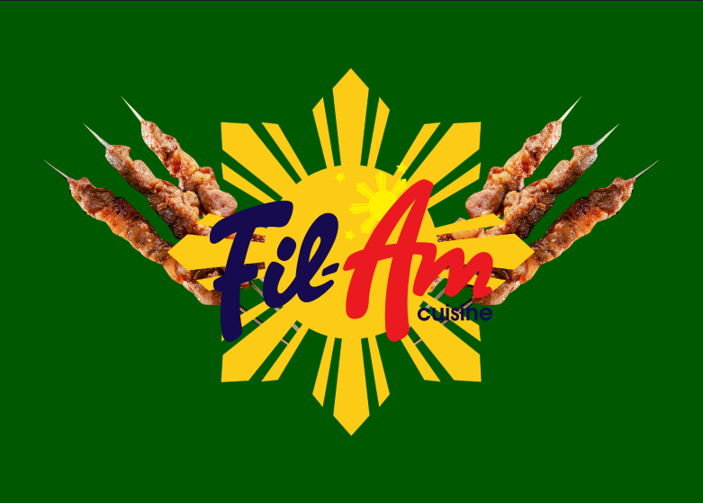

Case StudyFil-Am Cuisine: A Redesign
A website redesign for a Filipino restaurant, focused on modernizing the visual design and making it easier for customers to browse the menu and connect with the restaurant's Filipino-American heritage.
View Case Study